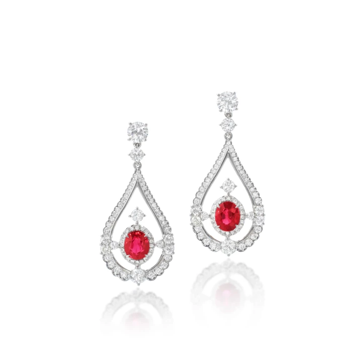
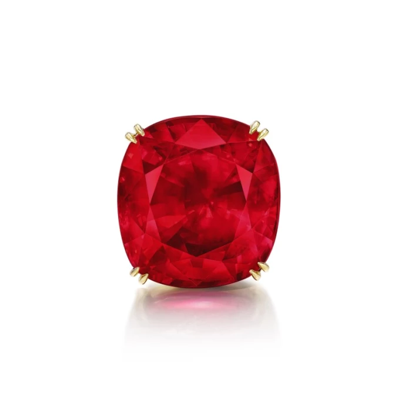
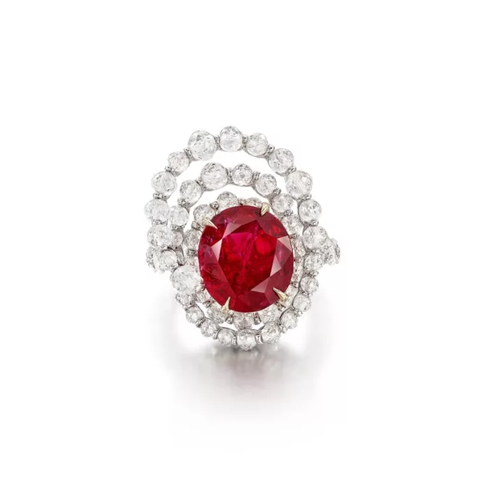

譯自 Lydia Dokko · Sotheby's Hong Kong · 2025年3月3日
深入了解名貴的「鴿血紅」紅寶石。
「鴿血紅」紅寶石的色澤鮮紅欲滴，帶著微泛藍光，呈現清澈透亮、內蘊熒光的效果。閱讀以下文章，來了解佔不到紅寶石總產量百分之一的「鴿血紅」紅寶石。
「鴿血紅」紅寶石的歷史淵源

25.59 克拉古墊形「鴿血紅」紅寶石
谷礦區的頂級紅寶石。如今，馬達加斯加、莫桑比克等地亦出產此珍稀寶石。紅寶石的開採歷史已逾兩千年，主要產地包括緬甸、莫桑比克和斯里蘭卡拉特納普勒。每個產地的紅寶石都擁有獨特的色調，當中緬甸以出產「鴿血紅」而聞名於世。緬甸礦區素有「紅寶石山谷」之稱，孕育了一些世上最大的「鴿血紅」紅寶石，當地不乏有關於紅寶石的神奇力量傳說。紅寶石的神秘色彩、悠久歷史、濃郁色澤與稀世珍罕的特質，令藏家對「鴿血紅」紅寶石尤為青睞。

10.33 克拉 天然「緬甸鴿血紅」未經加熱紅寶石，成交價 550 萬美元
名稱由來
「鴿血紅」（ko-twe）一詞源於緬甸，意為最鮮豔的紅色。關於這個美名的由來，緬甸流傳許多說法。據說，這是源自一個古老的傳說：被殺死的鴿子，其最初滴落的兩滴鮮血，便是這般濃豔的紅色。也有人說，這抹深紅，恰似鴿子眼中那點靈動的光彩。雖然「鴿血紅」最初專指緬甸紅寶石，但其他地區也出產了擁有這種鮮豔紅色的紅寶石，同樣冠有「鴿血紅」的美譽。
神秘魅力

「鴿血紅」紅寶石配鑽石胸針
「鴿血紅」紅寶石的魅力在於其無與倫比的耀眼色彩、稀有度和神秘感。寶石的深紅色調象徵愛情、熱情和生命。在古代文化中，「鴿血紅」被認為具有療癒功效，能夠淨化血液，解毒療傷。現代光譜分析亦證實了紅寶石的治療作用。紅寶石散發的光線混合紅光和藍紫光，這種光線組合可以改善情緒，舒緩神經系統。
分級標準

寶詩龍「鴿血紅」紅寶石配鑽石戒指
1996年，瑞士珠寶研究院（SSEF）引入顏色分級系統，以鑑定一顆紅寶石是否為正統的「鴿血紅」，並由此建立了市場標準。在此之前，許多不符合「鴿血紅」全部特性的紅寶石也被冠以此名。SSEF的標準成為全球鑑定「鴿血紅」紅寶石的權威，幫助全球寶石市場擺脫對低質量寶石的浪漫化誤解。購買「鴿血紅」紅寶石時，務必查看其是否經過SSEF等權威機構的實驗室認證。Gübelin亦是歷史悠久且享有盛譽的寶石鑑定實驗室，其鑑定報告以詳盡而聞名，通常包含紅寶石內部特徵（即內含物）等詳細資訊，有助於確定寶石的產地。SSEF和Gübelin的證書在「鴿血紅」紅寶石市場上備受推崇。
「鴿血紅」的評定，顏色至關重要。寶石需有至少51%的紅色才可稱為紅寶石。紅寶石中鉻元素的含量，決定了紅色的濃郁程度。換言之，寶石中會交織其他色彩，如黃、粉、藍、紫。「鴿血紅」蘊藏一抹深邃的紫色調，其鉻含量通常在0.3至0.5%（重量百分比）或更高。在GRS顏色分級體系中，「鴿血紅」屬於「鮮紅色」級別。
真正的「鴿血紅」紅寶石必須未經任何加熱或處理。未經處理的紅寶石在地質學上獨一無二，完整保留了寶石的天然靈韻。天然「鴿血紅」極其珍稀，每克拉的價值無可比擬。
歷史上，緬甸礦區一直是「鴿血紅」紅寶石的搖籃，其獨特的地質條件孕育出更為深邃的紅色。然而，近年來，莫桑比克和拉特納普勒也陸續發現「鴿血紅」的蹤跡。
每個寶石鑑定實驗室在鑑定報告中，均會以不同方式詳列「鴿血紅」的色澤。SSEF和Gübelin實驗室所鑑定的證書則在市場上最受歡迎。
價格範圍

一對「鴿血紅」紅寶石配鑽石吊墜耳環
近年來，全球珠寶市場上「鴿血紅」紅寶石的身價持續攀升。顏色是評估紅寶石價值的關鍵所在。一枚2.5克拉的「緬甸鴿血紅」，每克拉起價約為3萬美元；3.5克拉的「鴿血紅」，每克拉起價約為5.5萬美元；而5克拉的「鴿血紅」，每克拉價格更可達32萬美元。以上價格均基於2023至2024年的拍賣成交價估算，實際價格會因淨度、切工、顏色、鑲嵌工藝及來源等因素而異。
令人驚豔的「鴿血紅」成交紀錄

55.22 克拉「Estrela de FURA」「鴿血紅」紅寶石
迄今在歷史上發現尺寸最大的「鴿血紅」紅寶石於2023年在蘇富比「瑰麗珠寶」拍賣會上亮相，最終以3,500萬美元的天價成交。這顆名為「Estrela de FURA」的「鴿血紅」未經鑲嵌，重達52.22克拉，極為罕見。蘇富比稱其為莫桑比克地區迄今發現的最大紅寶石之一，擁有至臻的淨度和完美的「鴿血紅」色澤。在此之前，蘇富比於2015年以3,100萬美元成交一顆25.59克拉的「緬甸鴿血紅」，名為「Sunrise Ruby」。
邂逅超凡的「鴿血紅」臻品

豐吉「烈焰之泉」「鴿血紅」紅寶石配鑽石戒指
戒指是展現「鴿血紅」紅寶石魅力的絕佳方式，尤其是當其被璀璨的鑽石光環簇擁時，更顯光彩奪目。如果您追求極致奢華，不妨考慮「鴿血紅」配IIa型鑽石的戒指。IIa型鑽石是鑽石中的極品，不含任何可測量的氮或硼雜質，通常無色，但偶爾也會出現粉色、棕色或藍色等珍稀色彩。IIa型鑽石極其罕有，僅佔開採鑽石的不到2%。蘇富比曾於2018年以8,600萬港元（即約1,100萬美元）成交一枚獨一無二的戒指，鑲以一顆「緬甸鴿血紅」和IIa型鑽石。這枚「鴿血紅」紅寶石戒指被列為蘇富比拍賣史上四大高價紅寶石之一。
在蘇富比買賣「鴿血紅」紅寶石
蘇富比樂意為您服務，協助您購藏或出售下一個「鴿血紅」紅寶石。我們的網上平台精選了一系列可供即時選購的「鴿血紅」紅寶石。一枚2.5克拉的「緬甸鴿血紅」紅寶石戒指，未經加熱處理，起價通常為每克拉3萬美元。高級珠寶中的「鴿血紅」紅寶石起價為10萬美元。蘇富比亦銷售來自頂級奢侈品牌（如海瑞·溫斯頓、蒂芙尼、卡地亞等）的「鴿血紅」珠寶。除了網上平台和拍賣會上的拍品外，蘇富比亦會從全球供應商網絡搜羅適合做成戒指的「鴿血紅」紅寶石或其他寶石。
探索即將在紐約、倫敦、瑞士、巴黎和香港拍賣上拍的珠寶首飾。聯絡在紐約、倫敦、巴黎或香港的蘇富比藝廊助理預約參觀。聯絡珠寶部專家了解如何出售「鴿血紅」紅寶石。蘇富比拍賣行於1744年成立，雲集領先業界的珠寶專家，擁有遍佈全球各地的強大網絡，值得信賴。